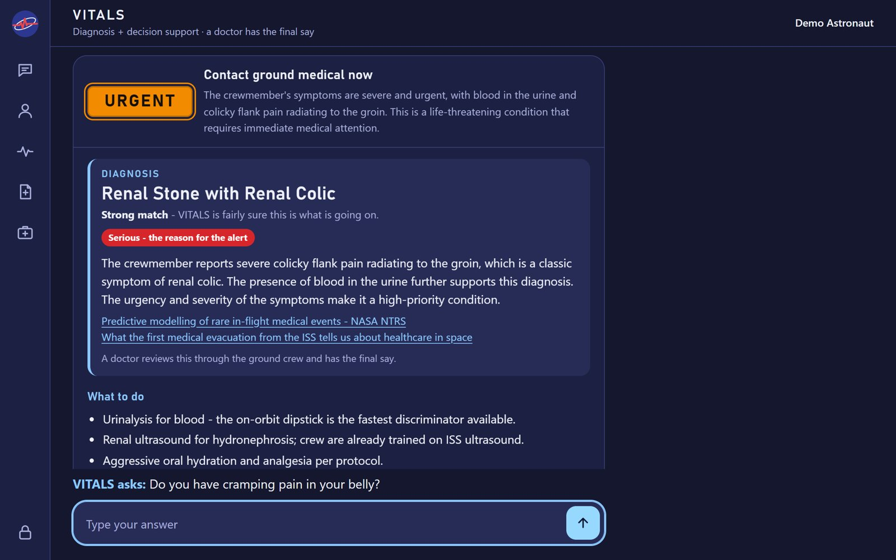
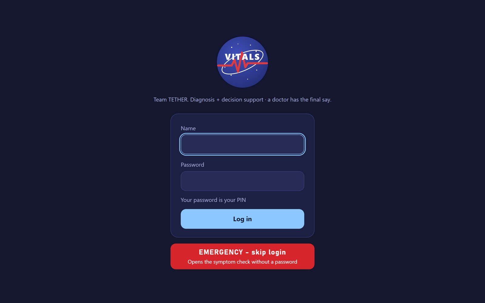
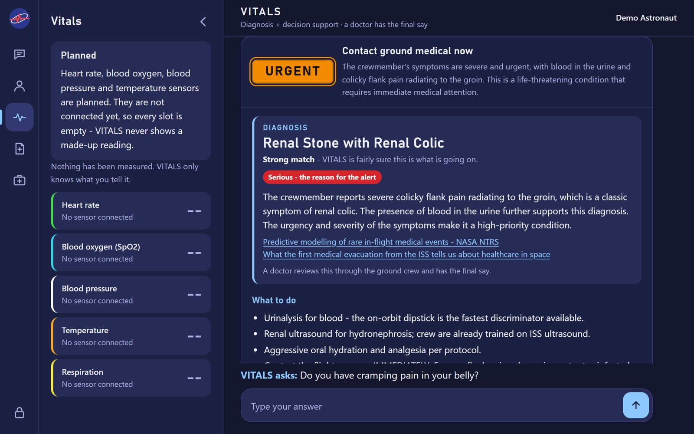

VITALS
When the doctor is 20 minutes away, the crew still needs an answer now. An onboard medical assistant for astronauts on long-duration Moon and Mars missions.
Learn moreEarth is 40 minutes away
Earth-based symptom checkers assume Earth. In deep space, a stuffy nose on day 2 is fluid shift, not a cold, and joint pain after a spacewalk is decompression sickness until proven otherwise. With communication blackouts of up to two weeks, the crew must decide what to do in the absence of a physician.
What could this be?
Identifying conditions from a research-grounded knowledge base without internet.
How serious is it?
Urgency-first prioritization to determine if a ground call is necessary.
What do we do now?
Immediate action steps and safety backstops for non-medical crewmembers.
The VITALS Core
Talk in Plain Words
Describe your symptoms in simple language so the AI can understand and respond effectively.
Urgency First
Every answer is prioritized by urgency. Critical conditions are flagged immediately for crew action.
Source-Backed Answers
Every diagnosis is grounded in NASA research. We never invent conditions; we only name what we know.
Safety Backstop
A deterministic rules engine can always raise an alarm if a condition is deemed too serious for the crew.
Fix What It Misread
Use the “Wrong?” button to correct any misinterpretations. We learn from every case logged in the mission.
Offline Operation
Runs fully offline on an NVIDIA Jetson. No internet needed, just a local AI model and a cited knowledge base.
How VITALS Works
Ask
Describe your symptoms in plain English.
Scope
Check if it’s a medical condition or a plain reply.
Read
Extract and analyze the specific symptoms listed.
Retrieve
Search NASA’s 35 cited spaceflight research pages.
Reason
Local AI reads only the cited research pages.
Check
Rules engine ensures no invented conditions are used.
Answer
Provide urgency, diagnosis, and what to do.
No in-flight data to train on, so VITALS grounds a local AI in cited NASA research instead.
Functional vs Future
Current: Reasoning over 35 conditions
VITALS provides immediate, offline medical reasoning grounded in NASA research. It processes symptoms through a safety backstop and cites every finding with absolute transparency.
Planned: Jetson Server + Sensors
Future hardware expansion includes a Jetson Orin Nano server, Raspberry Pi displays, and integrated biometric sensors. Voice input and multi-screen interfaces will enhance crew interaction.



Where It Stands
Technical Specifications
Engineered for high-stakes medical decision support in deep space.
Downloads
Print-ready files for the PDR on October 21, 2026.
Team TETHER
NASA HUNCH 2026–27: Medical Diagnostic System with Machine Learning & Artificial Intelligence
South Texas ISD Science Academy, Mercedes, Texas